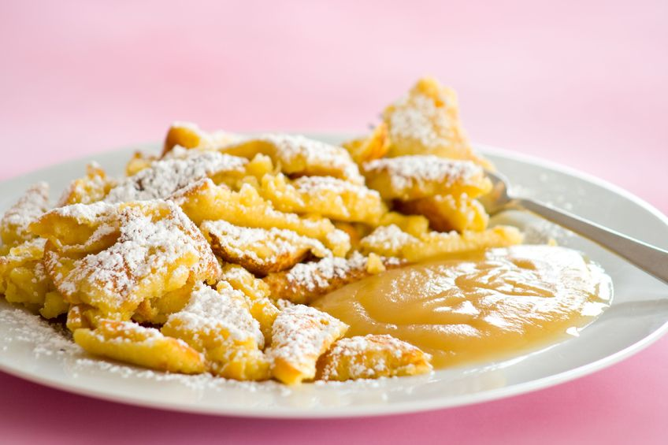

Kaiserschmarrn

Description:
Now, you may take a look at the picture and think to yourself "wait a second, this looks like a scrambled pancake!". Well, that's because that is exactly what it is! Though the exact origin of this dessert is unknown, most creation myths surrounding it involve someone messing up a pancake and going "screw this, I'll serve this anyway". Additionally, a lot of said myths also involve the royal house of Habsburg in one way or another, hence why it is called Kaiserschmarrn ("Kaiser" being the german word for "emperor").
Why I am writing about all of this? Truth be told, I don't know, but I guess the existence of this dish proves one thing right. In the words of the great late Bob Ross: "There are no mistakes, only happy accidents". Should we keep this in mind on the rest of our Odin Project journey? Maybe, who knows.
Ingredients:
- 200 grams all-purpose flour
- 30 grams white sugar
- 1 pinch of salt
- 4 medium sized eggs
- 300 ml milk
- 40 grams butter (for the pan)
- 30 grams raisins
- 1 pinch of powedered sugar to sprinkle over the finished dish
Instructions:
- Preheat oven to 180 degrees celsius
- Separate the egg yolk from the egg white, put egg white aside
- In a bowl, add the flour, sugar, salt and egg yolk. Whisk into a thick and smooth batter
- In a separate bowl, beat egg whites until stiff
- Mix the beaten egg whites into the batter
- In a big, flap pan (approx. 22-24 cm in diameter), melt the butter on high heat and beat to a foam
- Slowly pour in the batter, cook on each side until through (but not golden)
- Put the entire pan in the oven and bake until golden
- Remove from oven and use two forks to scramble the Kaiserschmarrn into uneven pieces
- Add raisins, mix well, put Kaiserschmarrn back into the oven for 1 more minute
- Put Kaiserschmarrn on plate and sprinkle with powdered sugar, serve with applesauce or plum jam